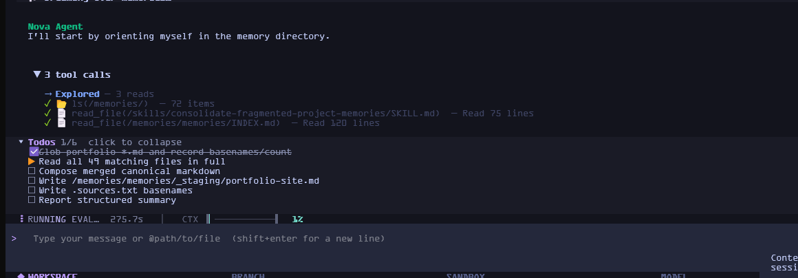

An agent that verifies its own work.
A terminal coding agent on LangGraph. It plans, edits, runs tools, grades the result, and re-drives itself until it passes.
~120 MB clone · no global install · Python 3.11+

Everything a coding agent needs, none of the ceremony.
30+ built-in tools, one canonical agent loop, and the same event stream behind the TUI, headless mode, and every remote bridge.
Plans, subagents, tools
Deep agent architecture with planning, filesystem access, and tool calling. Delegate to 13 built-in specialists or run them asynchronously on a remote LangGraph server and get the results back when you are idle.
13 subagentsSearch that understands code
Find code by description, not just exact text. Semantic search, a project graph with 5000+ nodes and blast-radius analysis, and full LSP support for go-to-definition, references, rename, and diagnostics.
LSP + project graphSafe by construction
Automatic .gitignore enforcement, command-injection detection,
URL sanitisation, snapshots before destructive operations with
/restore, and human-in-the-loop approval for anything risky.
Sandboxes available for OS, Docker, Modal, Runloop, and Daytona.
Extensible end to end
50+ built-in skills with progressive disclosure, MCP servers with
collision-free tool names, Python entry-point plugins that register slash
commands and middleware, and a persistent project wiki at
.nova/wiki/.
It reviews its own sessions and changes how it works.
Hermes, running out of band.
Most agents are frozen at whatever their prompt said on release day. Nova keeps an out-of-band verifier that mines tool-usage traces, extracts lessons, and writes reusable skills back into the loop. It gets measurably better the more you use it, without you tuning anything.
- 01Trace every run Tool calls, timings, and verdicts land in a durable SQLite store.
- 02Grade the output An out-of-band model call scores each task against a rubric.
- 03Re-drive on failure A failing verdict re-runs the task with the feedback, up to three times.
- 04Write the lesson down Repeated mistakes become a skill, and a tuned prompt template, permanently.
The same agent, minus the terminal.
Script it, put it in CI, or pipe it in from a bridge. The agent loop and the tool surface are identical.
# machine-readable output, capped at 10 turns, # tool approvals auto-denied (fail-closed) uv run nova -p "run the suite, report failures" \ --output-format json \ --max-turns 10 \ --deny-tools # or pipe the prompt on stdin echo "explain src/main.py" | uv run nova -p
Built for pipelines, not just for chatting.
--output-format
emits text,
json, or
stream-json.
--deny-tools closes
the approval loop so nothing hangs waiting for a human.
Cron and heartbeat scheduling fire jobs onto the same queue as the Discord and Telegram bridges, and a signed webhook server lets GitHub or Linear start a run without anyone relaying a message.
Two commands and you are running.
git clone https://github.com/Babitdor/NovaCode.git
cd NovaCode && uv sync
uv run nova
git clone https://github.com/Babitdor/NovaCode.git
cd NovaCode; uv sync
uv run nova
uv tool install --from git+https://github.com/Babitdor/NovaCode.git novacode-cli
nova
Voice I/O adds ~2 GB: uv pip install -e '.[voice]'The things people ask first.
Do I need a global install?
No. uv run nova always runs the current code straight from the repo,
so there are no stale snapshots, no PATH juggling, and no "which Python".
Add the repo's .venv to your PATH if you want a bare
nova command from anywhere.
Which model providers work?
OpenAI, Anthropic, Google Gemini, and local Ollama, all switchable from the
/model picker or the first-run wizard. Reasoning effort is a hot
swap too, via /effort, without restarting the session.
What happens if a tool call needs approval?
It interrupts and asks you, configurable per operation. Headless runs are the
exception: --deny-tools rejects everything automatically so a
pipeline fails closed instead of hanging.
Can I use it away from my machine?
Yes. Bridge it to Discord or Telegram (Telegram takes voice notes, transcribed locally), and a signed webhook endpoint lets external systems trigger a run. A Vixie companion handles desktop notifications.